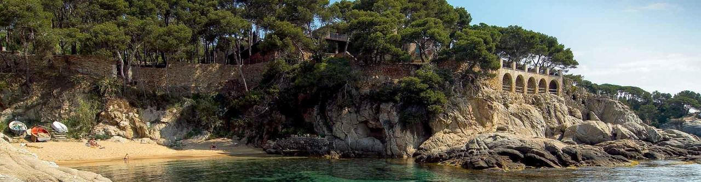

Ruta · Platja d'Aro
El camí de ronda de S'Agaró uneix les platges del Racó de S'Agaró i de Sa Conca seguint el traçat GR-92 . Juntament amb la urbanització noucentista, va ser declarat Bé Cultural d'Interès Nacional…